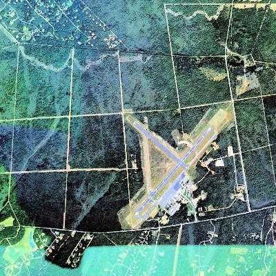

Let's get something clear. The purpose of this article is not to suggest an alternative explanation for the crash of JFK Jr's plane. The purpose of this article is to suggest that it is reasonable and prudent to examine all possibilities, not settle on the first explanation forced upon the public to the exclusion of all else.
Part 1. An Age Of Lies
We live in a time of very unpleasant realities. Truth has become such a valuable commodity that the government of the United States and the media have started (to put it politely) economizing it. Documented cases of media deception over the years have made it clear that the media lies to the public on important issues. As Richard Salent, Former President of CBS News has stated, media's job is to feed the public what media thinks the public ought to know. Clearly, anything that happens that the media doesn't think the public needs to know about will simply not be reported.
By way of example, let's take a look at the JFK assassination. For years, the government and the media sang a uniform chorus of "lone assassin" and "Magic Bullet", even though careful analysis showed that the media was using fraudulent photos to sell these claims. Finally, last year, trapped by his own handwritten notes uncovered in the National Archives, Warren Commission member JFK had an entry wound down on his back, over by the shoulder blade. The photo of JFK's shirt showed clearly where this entry wound was. Gerald Ford's (and the Warren's) official version placed the wound up by the base of the neck. The hole in the shirt was explained away by suggesting that the normally fastidious John Kennedy had allowed his shirt to come un-tucked and ride up his back under the suit coat sufficient to place the back of the shirt up around the neck. Now, however, the original source document showing the back wound to be right where the (properly tucked in) shirt indicated it was.
What does this mean? The theory of the lone assassin is based on the "Magic Bullet" theory, that one single bullet accounted for all of JFK's wounds except the head wound, plus all the wounds on Texas Governor John Connelly. In order to work, the entry wound on JFK's back had to be up at the base of the neck to line up with the purported exit wound in the front of the throat. If the entry wound wasn't where the "Magic Bullet" theory requires it to be then there is no "Magic Bullet". If there is no "Magic Bullet", then there is no "lone assassin".
But more to the point, even ahead of the implications for the "Magic Bullet" theory, the irrefutable fact is that the Warren Commission lied to the public about that back wound. Though they may try to explain it away as some bizarre attempt at historical "clarification", the plain simple fact is that a wound lower in the back and out on the shoulder blade was reported to the public by the Warren Commission as being at the base of the neck.
The Warren Commission lied to the public about the location of that wound. There is no other way to put it. It cannot be candy-coated. It cannot be "spun". It cannot be excused. The wound was in one place, but the public was told it was someplace else.
Just take a moment and think that through.
Once you accept that the Warren Report lied to the public, you'll realize you knew it all along. After all, the last official government verdict, rendered by the House Select Committee on Assassinations, was that there had indeed been a conspiracy, and John Connelly went to his grave insisting he was not hit by the same gunshot that had hit John F. Kennedy. The Zapruder film bears him out, showing Connelly, after John Kennedy has clutched his throat, still holding his Stetson hat in the hand which was just moments later, struck by a bullet. A different bullet.
For those of you old enough to remember, recall how the media unabashedly signed onto this lie of a "magic bullet" and a "lone assassin". The mainstream media, who purports to be the watchdog against government abuse on behalf of the American people, stood up to be counted with what may be the most monstrous lie told to the American people in the last half century. People tend to believe what they hear over and over again. And over and over again we heard the steady and unrelenting litany of "lone assassin", "lone assassin", "lone assassin". It wasn't news; it was a hypnotic sales pitch.
When Robert Kennedy was killed, yet again the people were told over and over again that it was a lone assassin. The government and the media spoke with a single voice of reassurance that nobody else had taken part in the assassination of Robert Kennedy. Yet it was clear from initial police reports that one other suspect did exist, a girl in a polka dot dress who was seen leading Sirhan around early in the evening, then running from the scene of the assassination. Probably few would have paid that much attention to her, since the investigation appeared not to be interested, until an official LAPD audio tape surfaced from the lie detector test of witness Sandy Serrano. Serrano was one of the witnesses who saw the woman in the Polka-dot dress leading Sirhan around prior to the shooting. Yet as can be heard on this tape, the police investigator is clearly trying o coerce Serrano into changing her story!
One more Kennedy death. One more cover-up.
In those innocent times, the American public was naïve, perhaps dangerously so. Americans never dreamed that our government and the media would lie to us all about something so important as the killing of our leaders. But, as history has shown, they did just that. We never dreamed that our nation's future was being shaped, not by the ballot box, but by the hired assassins of secretive powerful individuals. Yet it was, and still is.
The Kennedy assassinations, coupled with that of Martin Luther King, plus the attempted assassination of George Wallace, brought an end to that naivete, as we watched the man who would have never been President but for all those convenient deaths walk into the White House on Inauguration day, 1969.
More than anyone else, with the possible exception of the current occupant of the White House, Richard Nixon destroyed the image of an honorable and law-abiding American President we had all been raised with, The lesson of his term in office was a simple one. Presidents do break the law. Presidents commit perjury and obstruction of justice. Presidents have things to hide.
Oddly enough, Richard Nixon was forced to resign because of the John F. Kennedy assassination. The break-in at the Watergate offices of the Democratic National Committee would have never become the issue to topple a President, but for the need to protect just WHY the crime had been committed. The Democrats had obtained photographs which showed Nixon "associate" E. Howard Hunt to be one of the tramps arrested and then released in Dealey Plaza. This is why Hunt led the break-in at the Watergate. He was protecting his own posterior.
Rather than risk exposure of a far worse scandal, Nixon resigned, turning over the White House to Gerald Ford, the Warren Commission member who last year admitted last year to altering the official location of JFK's back wound.
From this linkage, it should be obvious that the various assassinations that dominate the political history of our nation are not the isolated events that the media and government would have us believe. They are, rather, high points on an ongoing continuum of intrigue and criminal enterprise that is the political reality.
Starting from the fact that you were lied to about the deaths of John and Robert Kennedy, take a moment to think back at just how many people had to sign onto those lies. Newscasters, police officers, investigators, and government officials, all had to take part, all DID take part.
That is an important lesson to keep in mind, that a lie to the public demands, and has little trouble obtaining, a vast number of people to help it along.
Part 2: The dishonesty of the media.
Asked to give a toast before the prestigious New York Press Club, John Swinton, the former Chief of Staff at the New York Times, made this candid confession [it's worth noting that Swinton was called "The Dean of His Profession" by other newsmen, who admired him greatly]:
From a very young age we are all raised in the belief that the media is supposed to keep an eye on the government, to watch out for wrongdoing. There is a carefully crafted illusion of an independent media, but it is illusion only. Since WW2, the Central Intelligence Agency has been running
operation MOCKINGBIRD which places CIA assets in management positions of all the media. That the CIA wields a great deal of control over the media and what it tells the American people was revealed by the heavy handed actions taken in regards to covering up that portion of the Iran-Contra scandal that took place at the Mena, Arkansas airport. Following the killing of cocaine smuggler and Iran-Contra pilot Barry Seal, writers Roger Morris and Sally Denton uncovered documents proving that Seal had been working for the CIA. That information was written up as an article for the Washington Post, and had been cleared for publication by legal and fact checking when Managing Editor Bob Kaiser spiked the article without explanation. When writer Gary Webb wrote his series of article "Dark Alliance", which accused the CIA of being the source of the cocaine that poured into Los Angeles in the 1980s, virtually every major newspaper, including the Los Angeles Times, united in their attack on his story. Less than one year later, the CIA's Inspector General issued a report that admitted to the cocaine trafficking in connection with Iran-Contra. None of the newspapers that savaged Gary Webb ever bothered to apologize to him.
The few times the media has appeared to expose government wrongdoing has later been revealed in historical hindsight as one faction using the media against another faction. For those issues which all factions agree must be kept from the public, the media operates with total unanimity. As we saw in the photos from the Dec 14th, 1963 POST magazine, the media was committing outright fraud to sell the single bullet theory to the public. And, as we saw with regard to the cocaine smuggling by the CIA, the media not only ignores the story, but attacks anyone who dares touch the subject.
And again, these are not isolated incidents, but part of a continuum, as evidenced by the various scandals which have hit the major media involving the fraudulently manufactured Food Lion story, the phony Bosnian "Concentration Camp" photos, and the use of explosives to manufacture a story about unsafe side mounted gas tanks on GM trucks.
That our media is biased is clear. All the mainstream media championed the story that White House Deputy Council Vincent Foster committed suicide. CBS "60 Minutes" went out of their way to attack writer Chris Ruddy, who pointed out the evidence of cover-up (evidence which has now brought the FBI into Federal Court on charges of witness harassment and evidence tampering). A&E's "Inside Investigations" explained away the lack of fingerprints on the smooth metal revolver Foster was found with by using a heavily textured semi-automatic pistol on their program, a deliberate fraud.
Speaking of CBS "60 Minutes", the executive producer of that show, Don Hewitt, has admitted on video tape to editing his show's segment on Gennifer Flowers to discredit her and help Bill Clinton, even though Gennifer Flowers had audio tapes which proved her story was true.
Because of incidents like the above, plus others so numerous as to be beyond the scope of this document, it has become popular to refer to members of the media as "presstitutes", in keeping with John Swinton's quite honest assessment of his own profession.
It therefore follows that, since the presstitutes write or broadcast what they are told to write and broadcast, that all media presents to the public is what the owners and controllers of the media want you to think. They print it, you think it. They broadcast it, you think it. They print it, you think it. They broadcast it, you think it. People believe what they hear over and over again.
And over and over again, you are being lied to.
Part 3: The FBI and COINTELPRO - harassment of those who try to expose the lies.
The FBI has enjoyed, for much of it's existance, a splendid public image. This is no accident. J. Edgar Hoover spent as much time polishing the image of the FBI as he did solving crimes, and the unofficial motto of the FBI remains, "Never embarrass the bureau".
Hoover was obsessed with Hollywood, going back to his battles with Charlie Chaplin. Hoover personally supervised the filming of the Jimmy Stewert movie, "The FBI Story", and FBI documents show that the FBI not only kept watch on celebrities, but kept an eye on movies that might be considering showing the FBI in a poor light. So concerned with the FBI's [public image was Hoover that he even used bureau assets to track rumors of his gay lifestyle.
But that's just the FBI's public image. The reality is quite something else.
It is inevitable that when a government lies to the people, sooner or later the liars need to have in place a mechanism to suppress anyone who might wish to expose the lies, the first amendment be damned.
Fullfilling that role is the FBI and it's COINTELPRO program, the harsh reality behind the polished public image.
Originally started back in the 60s to sabotage opposition to the war in Vietnam, the FBI's COINTELRO operation was exposed in the 70s and led to Congressional Hearings. In those hearings, it became obvious that rather than fighting crime, the FBI had been engaged in criminal actions of its own and for no other purpose than to silence anyone who spoke out against the government's policies, and especially those who challenged the official view of events.
One of the tools most used by the FBI was to sabotage public support for dissident views by planting false information, either through informants, the complicit media, or undercover informants which operated on every college campus (and still do to this day).
One of the most infamous smear jobs involved the "Black Panther Coloring Book". The Black Panthers were originally formed to address two issues. They wanted to make sure that kids in the ghettos were getting breakfasts, and they were concerned with the curriculum in the public schools and wanted local control of education (an issue that many today can easily identify with). And, of course, they wanted the government to respect their Constitutional rights.
Needless to say, the Federal government did not like either the idea of giving up control of the public school curriculum, nor of having to respect anyone's Constitutional rights.
The FBI then printed up the coloring book shown at the above link and distributed it far and wide. That it was mailed primarily to white households should have been the tip-off, but again, people didn't believe that the government of the United States engaged in such despicable behaviors, and that belief kept the people blind. The mainstream media then proceeded to tell the public that the coloring books were being given out to black children at those free breakfasts, and forever after, the Black Panthers were portrayed by the media as dangerous fanatics intending to kill white people. Needless to say, all support for local control of the curriculum vanished.
Yet another infamous FBI trick was the smearing of actress Jean Seberg, who at a time when the Black Panthers were under attack by the media and the FBI, openly supported them on the issues of civil rights.
Because of her fame as a film star, Jean Seberg drew a lot of public attention to the real issues the Black Panthers were working for, so the FBI set out to destroy her.
The SAIC Los Angeles wrote a memo to FBI headquarters in Washington D.C. Page one of the memo requested permission to plant a false story to destroy Jean Seberg's public image. Page two of the memo contained assurances that the smearing would never be traced back to the FBI, clear evidence that the Los Angeles office knew it was acting in an unethical manner.
Permission was granted by Washington D.C. with the suggestion that the smear be delayed until Jean's pregnancy was much more obvious. He phony letters were sent, and the story broken by Los Angles Times gossip columnist Joyce Haber. NEWSWEEK picked up the story, and it was soon world wide. All this at a time when inter-racial sex, let alone an inter-racial adulterous affair, was a career-wrecking scandal. The emotional shock of the smear drove Jean Seberg into miscarriage. The funeral for the baby was help with an open coffin, so the lie stood revealed in it's most tragic and pathetic form. Soon after, Jean eberg committed suicide. Because Jean Seberg's husband was a French Diplomat, the scandal became an international incident that ended only when the FBI was forced to make a public apology for it's action (one of very few times it has done so).
This is the harsh reality behind the glitzy and quite phony façade of the FBI. As whistleblower Frank Whitehurst has pointed out, and as the lawsuit against the FBI for witness harassment and evidence tampering in the Vincent Foster case underscores, the FBI is not always interested in what is true, but only in what is expedient.
The FBI is in the business of planting false information for the express purpose of deceiving the public.
Part 4: The NTSB and TWA 800
Perhaps no stronger indication exists of the culture of deception that permeates our government than the deplorable behavior of the NTSB in the aftermath of the crash of TWA 800.
The evidence that TWA 800 was victim to something other than a mysterious fuel tank explosion could fill a website (several, actually) but for our purposes, we will focus on one issue only, that of the strange red residue found on three rows of seats in the reconstructed wreckage.
In the NTSB's report, specifically the Fire & Explosions report written by Merritt Birky, the NTSB claims that the red residue, thought by many to be the combustion products of a solid fuel rocket motor, was the 3M contact cement used in the manufacture of the seats. The NTSB went further, claiming that lab tests conducted by NASA scientist Dr. Charles Bassett had linked the red residue to the seat glue.
But that is not what Dr. Bassett found. In a sworn declaration entered as evidence in a court case Dr. Bassett makes it clear that his tests did not and could not link the red residue to seat glue. More telling, deliberate attempts by him to coerce the normally pale green contact cement into assuming the reddish color of the residue all failed.
The NTSB lied to the public when they claimed Dr. Bassett's lab tests linked the red residue to seat glue. R. Bassett's tests did nothing of the kind.
The NTSB lied.
What the red residue actually is, is a subject for another monograph. The key point to be made here is that the National Transportation Safety Board willfully and knowingly lied to the public about an air crash.
The NTSB lied.
Keep that in mind.
Part 5: The crash of John F. Kennedy Jr's aircraft and the indications of a cover-up.
Having established that the government and the media have a prior (and quite deplorable) record of deliberate lies to the public, let us look at how the official story of the crash of John F. Kennedy Jr's plane evolved, and why it is suspect.
As first reported by United Press International, John F. Kennedy Jr. on approach to Martha's Vineyard in 8 mile visibility, was in radio contact with the ground, calmly informing them of his intentions to drop off a passenger before proceeding to Hyannis airport. Then, according to ABC News, JFK Jr's plane went into a steep dive, and crashed.
However, even before the wreckage was found, the story being put out in the media began to change. Gone was the previously reported radio conversation a calm JFK Jr. had with ground personnel just before the plane fell out of the sky, replaced by a declaration from the NTSB that JFK Jr. had not used his radio at all as he approached Martha's Vineyard. Gone also was the originally reported 8 mile visibility while the media began to hammer home the claim that Martha's Vineyard had been totally blanketed with a haze so heavy that pilots in the air would have been blind.
No sooner were the various stories put out but they quickly fell apart.
Here are some examples.
PROPAGANDA: JFK Jr. was lost.
PROPAGANDA: JK Jr. was in "over his head".
PROPAGANDA: JFK Jr. stalled the plane.
PROPAGANDA: JFK Jr. went into a steep turn and lost hi horizon.
PROPAGANDA: JFK Jr. didn't know his altitude and simply "flew into the ocean".
PROPAGANDA: JFK Jr. lost his instruments, and that is why he could not handle the dark and hazy (?) conditions
PROPAGANDA: JFK Jr. would have lost his artificial horizon if the vacuum pump failed in the aircraft.
PROPAGANDA JFK Jr. was a reckless pilot.
PROPAGANDA JFK Jr's wife was afraid to fly with him.
PROPAGANDA JFK Jr. had only 40 hours experience.
PROPAGANDA The weather was very hazy.
PROPAGANDA: Martha's Vineyard is very dark and won't show through the haze.
That the Kennedy family has been the target of political assassination is a part of the American political landscape. It's a given.
That cover-ups surrounded the deaths of Kennedys is also a given.
That our government lies to us, with the media's help, is a given.
There is good cause to assume we are being lied to yet again.

Click to go to aircraft specs.
Weather radar image taken 10:40 PM the night of the crash. The radar was
set for "clear", a much more sensitive setting than "precipitation" which tracks rain.
That this radar image is showing fog and haze as opposed to clouds is proven by the fact that the FAA had listed conditions as VFR with 8 mile visibility for the area.
This radar image shows fog and haze along
New York and Long Island, but Martha's Vineyard is definatly in clear air.
Click HERE for news article which confirms JFK Jr. to be in calm radio contact
with the ground, in 8 mile visibility, and reports a witness who saw a white flash up in the sky. This article also tells a story of a
strange radio bacon, thought to be that of JFK Jr's plane, which started at the time of the crash but in the wrong location, then
mysteriously shut down some hous later.
Click HERE for news article which
quotes an eyewitness report that conditions on Martha's Vineyard were not hazy. This report also
shows that people on the shore of the island could see aircraft on approach out over the ocean,
proving that aircraft out over the ocean could see the shore.
Click HERE for a Letter to the Editor
published in the Martha's Vineyard Times complaining how new lights which point up into the sky
have turned the center of the island as bright as the "Boston Skyline".
New York Post reporter Cindy Adams outs C. David Heymann for deliberatly planting
false information with the press, information which implies that JFK Jr. was an incompetant pilot.
New York Observer reporter Andrew Goldman confirms C. David Heymann for deliberatly planting
false information with the press, information which smears JFK Jr. as a reckless
and incompetant pilot.
The very first night the aircraft carrying JFK Jr. vanished, there were early reports
of an emergancy beacon being detected, but detected quite a dstance away from where the
plane's wreckage was actually found.
From the initial UPI story, we get the following odd comment.
Was another plane down in the area that night? If not, then the beacon has to be relative.
Here we find that the beacon that has the Coast Guard ordering a search in the WRONG LOCATION
simply switches goes away. The source of that beacon has never been identified.
For those critical first few hours, this beacon had searchers looking in the wrong place.
Then it simple went away.
Just days prior to his death, NBC Dateline hinted that JFK Jr. was considering an entry into politics,
and mentioned that a story to that effect was to be published in the July 26th, 1999 issue of NEWSWEEK.
NEWSWEEK recalled that issue from the distrubutors, and had them destroyed.
CNN ran a story claiming that NEWSWEEK planned to change covers and re-distribute, but that never happened. The NEWSWEEK issue
dealing with JFK Jr. is dated August 2nd. The July 26th 1999 issue of NEWSWEEK simply vanished.
" There is no such thing, at this date of the world's history, as an
independent press. You know it and I know it. There is not one of you
who dares to write your honest opinions, and if you did, you know
beforehand that it would never appear in print. I am paid weekly for
keeping my honest opinions out of the paper I am connected with. Others
of you are paid similar salaries for similar things, and any of you who
would be so foolish as to write honest opinions would be out on the
streets looking for another job.
If I allowed my honest opinions to appear in one issue of my paper,
before twenty-four hours my occupation would be gone. The business of
the journalist is to destroy the truth; to lie outright; to pervert; to
vilify; to fawn at the feet of mammon, and to sell the country for his
daily bread. You know it and I know it and what folly is this toasting
an independent press. We are the tools and vassals of the rich men
behind the scenes. We are the jumping jacks, they pull the strings and
we dance. Our talents, our possibilities and our lives are all the
property of other men. We are intellectual prostitutes. "
DON HEWITT (Executive Producer, "60 Minutes"): And they came to us
because they were in big trouble in New Hampshire. They were about to
lose right there and they needed some first aid. They needed some
bandaging. What they needed was a paramedic. So they came to us and
we did it and that's what they wanted to do. When I told Tim Russer
that I was persona-non-grata at the White House, he said, "Why?" I
said, "The Gennifer Flowers interview." He said, "You got him the
nomination." I said, "I know that." As far as I know from the
conversations I've had, Bernie Nussbaum knew that, Gergen knows that,
Lloyd Cutler certainly knows it 'cause Lloyd had a hand in his coming
on that night.
You know it was strong medicine the way I edited it but he was a very
sick candidate. He needed very strong medicine, and I'm not in the
business of doctoring candidates but he got up out of a sick bed that
night and walked to the nomination and as I said to Mandy, "You know
if I'ld edited it your way, you know where you'd be today? You'd still
be up in New Hampshire looking for the nomination." He became the
candidate that night.
FACT: When JFK Jr. radioed controllers on the Cape (as reported on Boston TV News) to announce his approach to Martha's Vineyard, radar showed him to be just where he stated he was and at the correct altitude for the approach.
FACT: JFK Jr's conversational tone on the radio reveals that he was calm. He was not disoriented. He didn't ask for directions. He didn't indicate he had any problem at all. He clearly was confident he was going to find the airport and land.
FACT: The radar track shows that he was well above stall speed.
FACT: There is no reason for JFK Jr. to have been in any turn at all at that point on the flight path leading into the airport. He was already lined up with the main runway at Martha's Vineyard airport.
FACT: The radar track shows him flying at the proper altitude, then (as ABC News put it) "falling out of the sky".
FACT: The fact that the radar was getting good data from his encoding altimeter proves his instruments were operating.
FACT: MSNBC is the only media outlet to have tried to hype this one, using a self-proclaimed "aviation expert". His claim is also false, as there is a backup vacuum system in the pitot assembly of that aircraft.
FACT: This claim was planted everywhere in the media, always attributed to an "unnamed source". One reporter, Cindy Adams at the New York Post, later had cause to suspect she had been lied to. So did Andrew Goldman at the New York Observer.
Interviews with individuals directly familier with JFK Jr's flying ability shown on Inside Edition confirmed that he was a highly skilled and careful pilot.
FACT: Again a story attributed to "unnamed sources", and again debunked by the interviews shown on Inside Edition. JFK Jr's wife had no problem flying with JFK Jr. and flew with him often.
FACT: He had 40 hours in that one aircraft. His total experience was about 300 hours, more than enough to qualify him for a commercial pilot's license. According to FAA statistics, 300 hours made him a more careful and safer pilot than one with 1000 hours, who is more complacent.
FACT: The FAA issued VFR weather conditions that night, and the weather report (mentioned in the UPI story) called for 8 mile visibility. One witness on shore reported that there was very little haze and that standing on the shore, he could see airplanes out over the ocean on approach to the island, proof that airplanes on the approach could see the shore. This claim is backed up not only by the weather report of 8 mile visibility, but by a weather radar image taken at about the time of the crash. This radar image is showing haze and fog along New York and Long Island (if this radar image were of clouds, the FAA would not have declared VFR flying conditions that night) but none at all at Martha's Vineyard. ON the morning after the crash, CNN reported that weather could be ruled out as a factor in the crash!
FACT: That may have been true only a few months ago. However, as evidenced by a Letter to the Editor of the Martha's Vineyard Times just days after the JFK Jr. crash, new lights installed on the island, lights that point up in the sky, are so bright they are drawing complaints from island residents.
General Background Info
Gay Head
Martha's Vineyard Airport (NOA satellite image)
The aircraft
The Weather That Night.
Weather Radar Shows Clear Skies.
News Articles.
The first UPI article.
There was no heavy haze.
It Wasn't Dark at all.
Martha's Vineyard has bright lights shining up into the sky.
Deliberate Disinformation That Points to a Cover-up.
Deliberate Disinformation That Points to a Cover-up. Part 2
The on again off again beacon.
An emergency beacon thought to belong to the plane was activated and
heard by the Coast Guard in Long Island, N.Y., at 3:40 a.m. But as the
search went on, authorities seemed to discount the relevance of the
beacon signal.
Kurt Hartman, spokesman for the U.S. Coast Guard's district
headquarters in New Haven, Conn., said this morning, "We received a
call from our district office in Boston directing us to conduct a
shoreline search off Horton Point, in Long Island Sound, for an
emergency locating transmitting beacon."
But by 10:30 a.m., the Coast Guard was no longer receiving a signal
from the emergency beacon that was believed to be on Kennedy's small
plane.
FOOTNOTE: The July 26th, 1999 issue of Newsweek
Witness "no longer available".
JFK Jr-"SKY FLASH" REPORTER UNAPPROACHABLE
~~~~~~~~~~~~~~~~~~~~~~~~~~~~~~~~~~~~~~~~~
Aug. 5, 1999
I just phoned the Martha's Vineyard Gazette and spoke with a
woman there. I asked her about the statement -- in the July 17th
United Press International report of the John F. Kennedy Jr.
plane crash http://www.upi.com/corp/news/jfkjr3.html
-- that a reporter for the Martha's Vineyard Gazette had
witnessed an explosion in the sky around the time of the crash.
She replied, "Oh, that story was completely bogus. What really
happened was that someone was shooting off fireworks on Falmouth."
"Falmouth?" I said, "Is that an island?" "Falmouth," she said,
"is the closest point to Martha's Vineyard."
I said, "But this reporter witnessed an explosion in the SKY."
She countered, "Well, they were shooting rockets up in the
air, or something like that."
Fearing that she might hang up if I continued to contradict her,
I asked, "May I speak with the reporter who witnessed this?"
"Oh, no," she replied nervously, "we can't do that."
I said, "Oh, that's strange. What could be the problem with
speaking to a reporter?" She repeated, "We can't permit that."
I said, "Okay, can you at least give me his name?"
"No, we can't do that, either," she persisted." Then she added,
"He no longer works for us," almost as if she were making it up,
just to get me to give up. Then when I responded with a surprised
"Ohhh", she suddenly realized that her comment had made matters
worse and, in a jolt of vexation, she sputtered, "Oh, no, no!
It has nothing to do with that incident. He went back to school."
"Oh," I said, "so is he a journalism student?" After an
answerless pause, I thanked her and said goodbye.
I think she was relieved.
What do you make of this, folks? What questions would
you have asked if you had called the Martha's Vineyard
Gazette, at (508)627-4311? Would you have asked if the
reason why the UPI quote (of his statement that he saw a
"big white flash" in the sky off Philbin Beach at about
the time of the crash) was expunged from ALL subsequent
news reports from ALL news outlets was because this
reporter had personally called United Press International
and told them that he had made a mistake -- that the
"big white flash" he saw in the sky off Philbin Beach
at about the time of the crash was REALLY caused by
someone shooting rockets into the air from Falmouth?
And if he would have ever made such an absurd retraction,
then how is it that no other news outlet ANYWHERE has, after
July 17th, repeated the reporter's sighting ANYWAY, considering
that news outlets feed off of one another (e.g. WCVB-TV said
this, and UPI said this, and so on)? How is it that this
media magical disappearing act could have been pulled off so
neatly, without ONE SINGLE news outlet breaking the code of
silence?
And so, we come, full circle, to that unnamed, unidentifiable,
unapproachable reporter: the unreporting reporter.
If his retraction was so widely recognized throughout all
the cutting rooms of mass medialand ... then why in the hell
can NO ONE be allowed to speak with him, much less, even find
out his name?
And how does the Vineyard Gazette KNOW that its reporter
definitely saw fireworks off of Falmouth, and not a "big white
flash" off of Philbin Beach? Did the reporter later reflect on
his sighting, replay his mental videotape, and say to himself,
"Gee, that wasn't a big white flash in the sky off of Philbin
Beach. It was rockets shooting up in the air off of Falmouth."
Is that how the human mind functions? You just go back and
replay the tape in your head, and see what actually happened?
Or, did someone ELSE tell the Vineyard Gazette that the reporter
saw fireworks off of Falmouth at around the time of the Kennedy
plane's plunge into the ocean? -- and that they had better stick
to that story!
Furthermore, did you ever hear of anyone going "back to school"
before August 5th (the date of my phone call to the Gazette)?
Doesn't school start in September?
And furthermore still -- someone notified me that Falmouth is in
the opposite direction from Philbin Beach. The UPI report indeed
stated that the Vineyard Gazette reporter sighted the "big white
flash" off of Philbin Beach. Well, that's easy enough to
check out. Is Philbin Beach near the line-of-sight of Falmouth?
Would you check it out for me and let me know? Thanks.
John DiNardo jdinardo@idt.net
Back To The Top.
Mail to: What Really Happened
{kind=link}
{kind=link}
{kind=link}
{kind=link}
{kind=link}
{kind=link}
{kind=link}